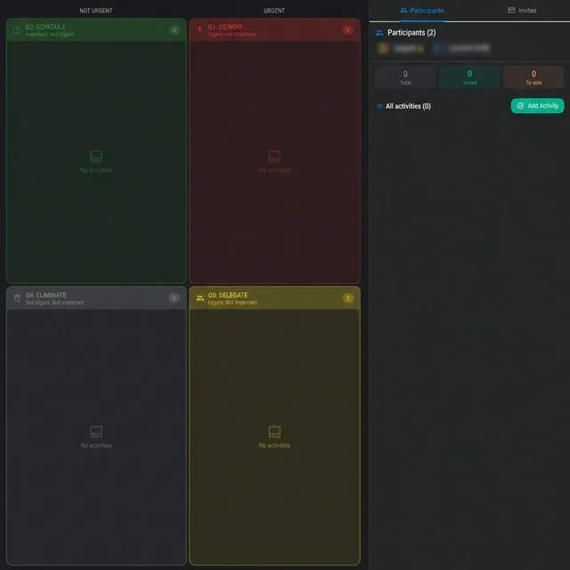
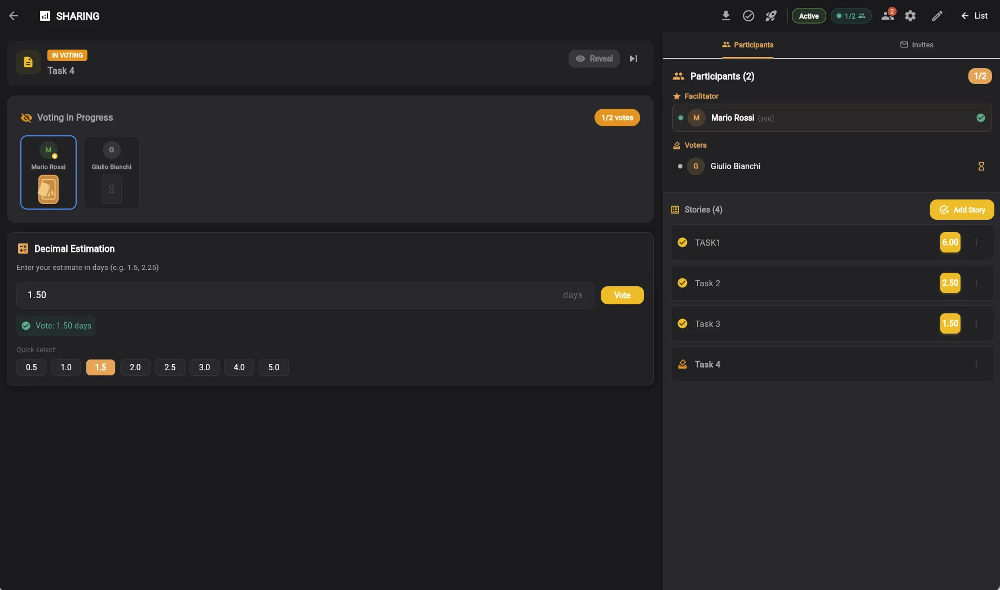
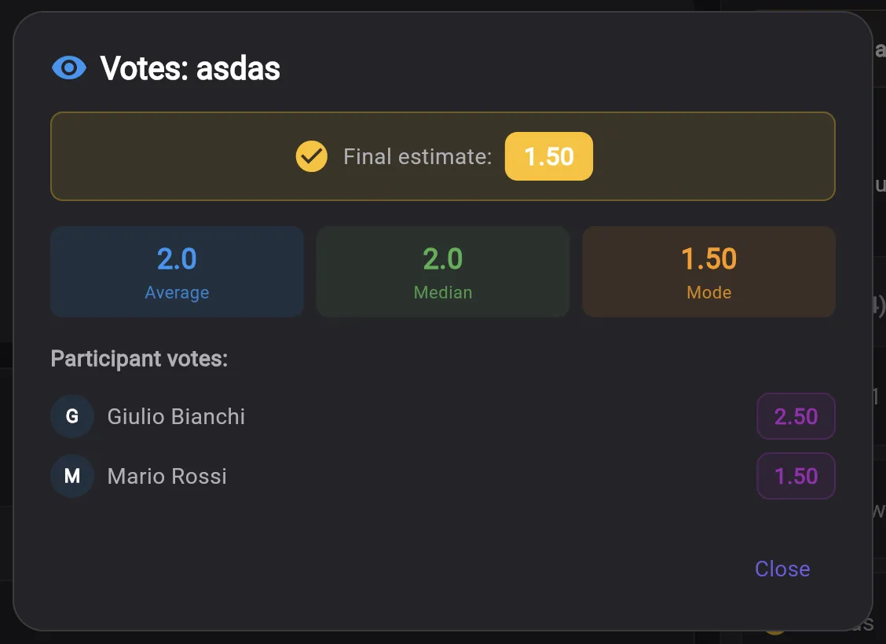
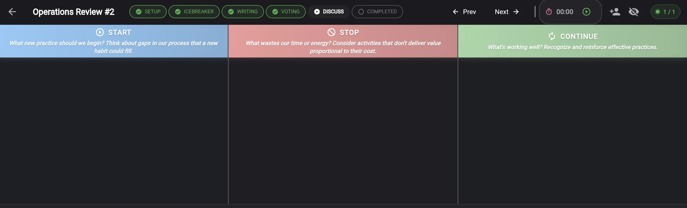
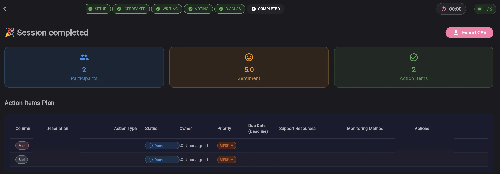

5 Herramientas Agiles Gratuitas para Tu Equipo
Tablero Kanban, Matriz Eisenhower, Planning Poker, Sprint Manager y Retrospectiva. Una unica plataforma integrada desde la idea hasta la entrega.
Empieza GratisPor Que los Equipos Eligen Keisen
Gratis para Siempre
5 herramientas completas sin limites de tiempo. Plan Free con 5 proyectos, 50 tareas y 10 invitaciones por herramienta.
5 Herramientas Integradas
Flujo de trabajo agil completo: recopila, prioriza, estima, ejecuta y mejora. Todo en una unica plataforma.
Colaboracion en Tiempo Real
Invita al equipo por email con permisos basados en roles. Owner, Editor, Viewer y roles Scrum dedicados.
Analisis Avanzados
Graficos CFD, burndown, velocity chart, seguimiento WIP y deteccion de cuellos de botella integrados.
8 Idiomas
Interfaz y guías metodológicas en Italiano, Inglés, Francés, Español, Portugués, Ruso, Alemán e Indonesio.
Cero Instalacion
Funciona en el navegador en cualquier dispositivo. Sin descargas, sin configuracion.
Keisen en Accion





Cinco Herramientas, Una Plataforma
Smart Todo y Tablero Kanban
Tablero Kanban con columnas personalizables, arrastrar y soltar, limites WIP, analisis CFD con lead time y cycle time, subtareas con progreso, comentarios con imagenes, archivos adjuntos, etiquetas de colores y vista global entre listas.
Ideal para: gestion de tareas diarias, flujo de trabajo del equipo, seguimiento de proyectos
🎯Matriz Eisenhower
Priorizacion en 4 cuadrantes por urgencia e importancia con sistema de votacion colaborativa, grafico de dispersion, lista de prioridades automatica, matriz RACI para asignacion de roles y compartir con el equipo.
Ideal para: decisiones estrategicas, priorizacion del backlog, alineacion del equipo
🃏Estimation Room y Planning Poker
7 modalidades de estimacion: Fibonacci, T-Shirt, PERT, Dot Voting, Bucket, Decimal y Five Fingers. Votacion colaborativa en tiempo real con estadisticas, deteccion de consenso y temporizador configurable.
Ideal para: sprint planning, estimacion del backlog, equipos distribuidos
🔄Agile Process Manager
Ciclo de vida Sprint completo con frameworks Scrum, Kanban e Hibrido. Gestion de backlog, historias de usuario, grafico burndown, seguimiento de velocity, analisis de carga de trabajo del equipo, metricas KPI y exportacion a Google Sheets.
Ideal para: equipos Scrum, desarrollo de software, gestion de sprints
💬Retrospective Board
6 plantillas: Start/Stop/Continue, Sailboat, 4Ls, Starfish, Mad/Sad/Glad y DAKI. Fases guiadas con temporizador, elementos de accion, sugerencias SMART, overlay Agile Coach y seguimiento de sentimiento.
Ideal para: mejora continua, cierre de sprint, feedback del equipo
Flujo de Trabajo Agil Integrado
Todas las herramientas trabajan juntas en un flujo continuo desde la idea hasta la entrega.
Funcionalidades de la Plataforma
- Tablero Kanban con columnas personalizables y limites WIP para optimizar el flujo
- Matriz Eisenhower para priorizacion urgente/importante con votacion colaborativa
- 7 modalidades de estimacion en tiempo real con deteccion automatica de consenso
- Gestion de sprints con graficos burndown y seguimiento de velocity para monitorear el progreso
- 6 plantillas de retrospectiva con facilitacion guiada y seguimiento de sentimiento
- Permisos basados en roles: Owner, Editor, Viewer y roles Scrum (PO, SM, Dev)
- Analisis CFD con lead time, cycle time, throughput y deteccion de cuellos de botella
- Integracion entre herramientas: exporta tareas entre Smart Todo, Eisenhower y Agile Process
- Exportacion a Google Sheets con 5 hojas formateadas para informes
- Registro de auditoria completo con 12 tipos de accion para historial de cambios
- Modo oscuro y modo claro con deteccion automatica de preferencia del sistema
- Autenticacion Google para acceso seguro e inmediato sin registro
Todas las herramientas comparten el mismo ecosistema: exporta una tarea de Smart Todo a la Matriz Eisenhower para priorizarla, estimala con Planning Poker y gestionala en un Sprint.
Preguntas Frecuentes
¿Que es Keisen?
¿Keisen es realmente gratuito?
¿Que herramientas incluye Keisen?
¿Como se compara Keisen con Trello, Todoist o Asana?
¿Debo instalar algo?
¿Puedo colaborar con mi equipo?
¿Que idiomas soporta Keisen?
¿Mis datos estan seguros?
¿Como uso varias herramientas de Keisen juntas?
¿Keisen funciona en movil y tablet?
¿Como invito a mi equipo?
¿Que incluye exactamente el plan Free?
¿Puedo exportar mis datos?
¿Listo para Trabajar Mejor?
Unete a los equipos que usan Keisen para gestionar el flujo de trabajo agil desde la idea hasta la entrega.
Empieza Gratis